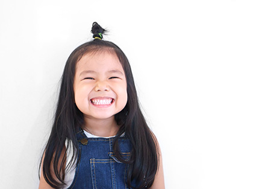
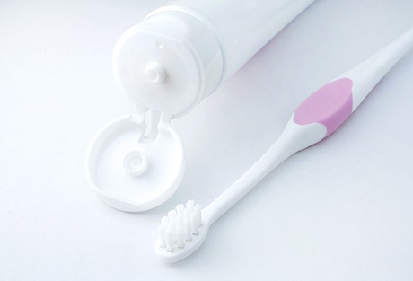
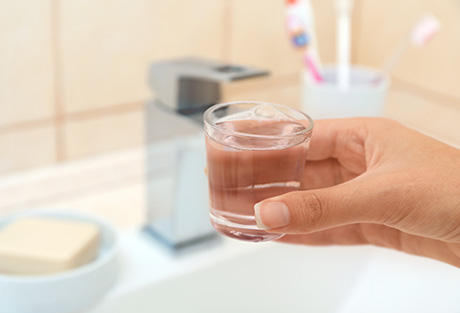
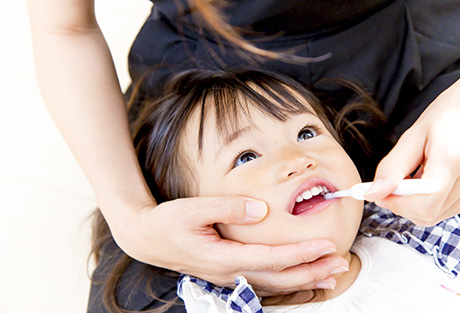
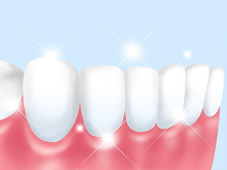
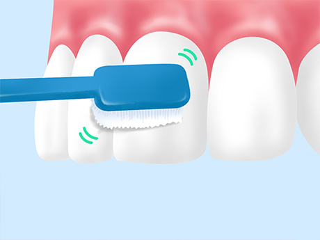
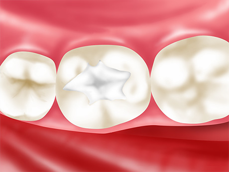

お子様の歯の健康を守りたい
乳歯は、大人の永久歯に比べてむし歯になりやすいのが特徴です。町田市の歯医者「ワイズデンタルオフィス」では子供の歯の特徴をふまえた診療により、大切な歯をお守りしたいと考えています。お子様のお口についてのお悩みは、どうぞ当院までご相談ください。

お子様の歯の健康を保つには、ご家族のサポートが欠かせません
子供の乳歯は表面を覆っているエナメル質が薄く、むし歯菌が出す酸への抵抗力が低い特徴があります。そのため大人よりもむし歯になりやすく、一度なると進行も早いのです。
まだ自分でお口のケアがきちんとできないお子様の歯をむし歯から守るには、ご家族のサポートが欠かせません。以下の3つのポイントを押さえ、大切なお子様の歯を守りましょう。
お子様の歯を守るポイント
POINT 01 歯質を強くしましょう
|  | フッ素には歯質を強くする効果があり、定期的に歯面に塗布するとむし歯に対する抵抗力を高められます。併せてご自宅で、フッ素入りのブラッシング剤を使うのもおすすめです。 |
POINT 02 ダラダラ食べさせないようにしましょう
|  | お口の中が汚れていると、むし歯ができやすい環境がつくられてしまいます。時間を決めずダラダラと食べていると、お口の中は常に汚れた状態になるため、食べる時間を決めることをおすすめします。また食べたらブラッシングする習慣をつけ、難しいときには口をゆすぐなどするといいでしょう。 |
POINT 03 仕上げみがきをしましょう
|  | むし歯を予防するには、毎日のブラッシングが重要です。しかし小さなお子様は、まだ自分できれいに汚れを落とせません。最後にご家族の方が仕上げみがきをし、お口をきれいにしてあげてください。 |
当院の小児歯科の特長
特長01 お子様に合ったブラッシング方法をアドバイスします
奥歯の溝部分など、お子様がむし歯になりやすい部分があります。当院では、そういったお子様ならではのお口の特徴や、それをふまえた効果的なブラッシング方法などをアドバイスいたします。
お子様自身のブラッシングはもちろん、ご家族の方による仕上げみがきのポイントなどもお伝えしますので、毎日しっかりみがいてあげてください。また初期のむし歯は見つけにくいため、定期的に来院いただき、歯科医師によるチェックを受けることをおすすめします。
特長02 歯医者を嫌いにさせないよう少しずつ治療を進めます
お子様が一度歯医者を嫌いになってしまうと、その後の通院や治療が難しくなり、お口の健康を維持できません。そこで当院では、嫌がるお子様に無理に治療をするようなことはせず、雰囲気に慣れてもらいながら少しずつ進めていきます。
多少時間がかかるかもしれませんが、ご家族の方もご理解・ご協力いただけますようお願いいたします。
小児歯科メニュー
フッ素塗布
|  | 歯質を強くする効果があるフッ素を歯の表面に塗布する処置で、むし歯への抵抗力を高められます。 またごく初期のむし歯であれば、フッ素塗布で再石灰化を促し治癒することもあります。定期的に行うことで、予防効果が高まります。 |
ブラッシング指導
|  | お子様一人ひとりの成長に合った、正しいブラッシング方法を指導します。ご家族の方には仕上げみがきのコツもお伝えします。 |
シーラント
|  | 奥歯にある深く複雑な溝には汚れが溜まりやすく、むし歯になりやすいのが特徴です。この溝をあらかじめレジン（歯科用プラスチック）で埋めてしまい、むし歯を予防します。 |
症例紹介
○○の症例
 |
|
テキストが入ります。テキストが入ります。テキストが入ります。テキストが入ります。テキストが入ります。テキストが入ります。テキストが入ります。テキストが入ります。テキストが入ります。テキストが入ります。テキストが入ります。
| 治療における注意点・リスク | |
|---|---|
| 治療期間 | |
| 治療費用 |
○○の症例
|
|
テキストが入ります。テキストが入ります。テキストが入ります。テキストが入ります。テキストが入ります。テキストが入ります。テキストが入ります。テキストが入ります。テキストが入ります。テキストが入ります。テキストが入ります。
| 治療における注意点・リスク | |
|---|---|
| 治療期間 | |
| 治療費用 |
むし歯・歯周病にならないために「予防歯科・定期検診」